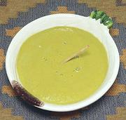

|
Cilantro Mayo SauceChile - Pebre de Cilantro | ||||
| Makes: Effort: Sched: DoAhead: |
2 cups ** 35 min Yes |
A fine and tasty sauce or dip. It works well as a spread on bread, sauce for side dishes, or dip for chips, fries, or crudités. Also good with fish or chicken. | |||
|
|
10 3/4 3 2 tt 1/4 1 1/4 |
oz c oz cl c T t |
Tomatoes Cilantro Onion Garlic Chili, grn (1) Mayonnaise Olive Oil Salt |
As you prepare ingredients, just add them to your blender, or the tall can of your Mixie. Make - (35 min)
|